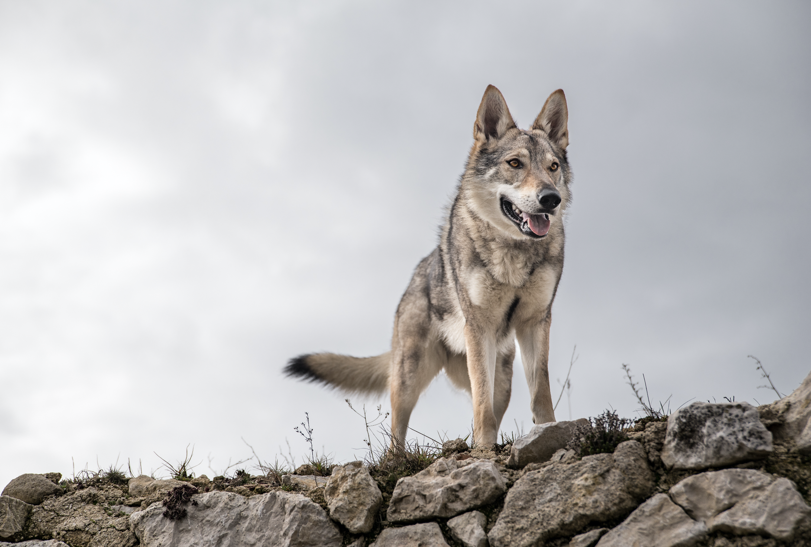
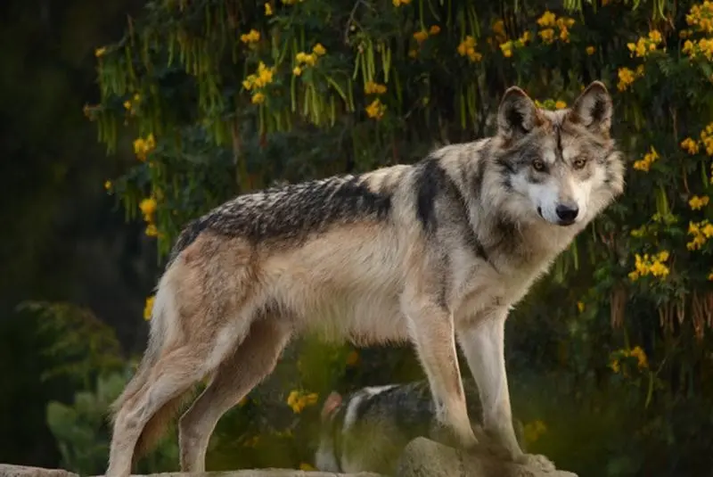
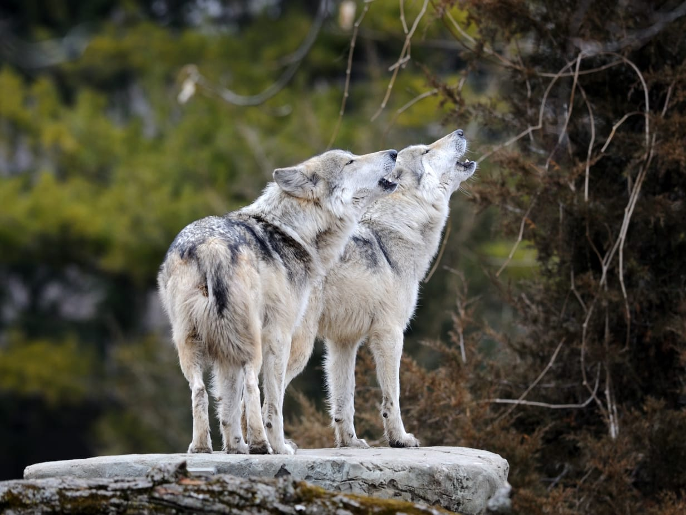

El lobo mexicano (Canis lupus baileyi) es la subespecie más pequeña de lobo gris y habita en bosques y montañas del norte de México y el sur de Estados Unidos. Estuvo al borde de la extinción en el siglo XX debido a la caza y la pérdida de hábitat. Gracias a programas de reproducción en cautiverio y reintroducción, su población ha comenzado a recuperarse, aunque sigue siendo una especie en peligro crítico. El lobo mexicano es símbolo de la conservación y del equilibrio ecológico en los ecosistemas donde habita.


